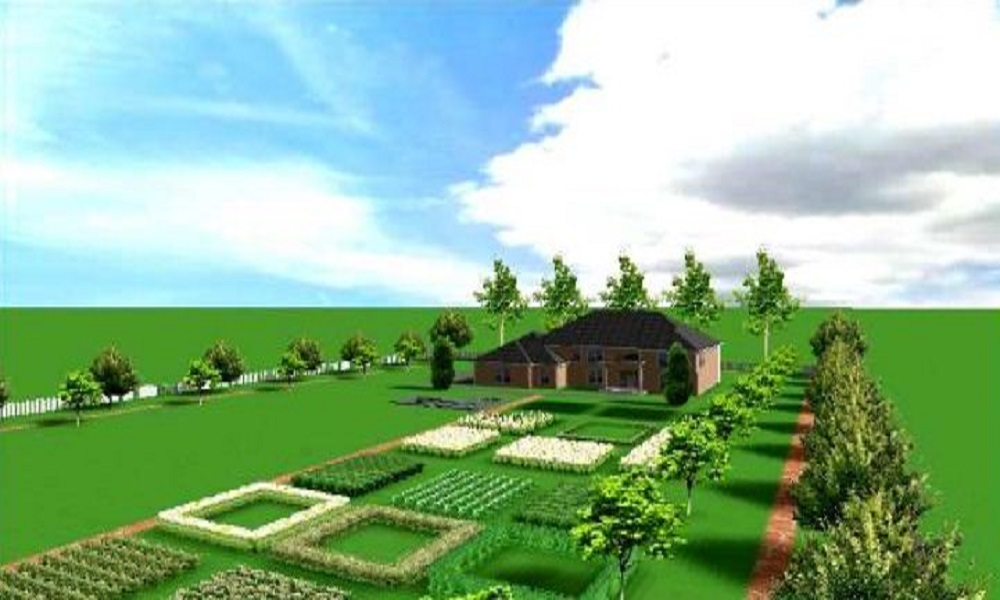
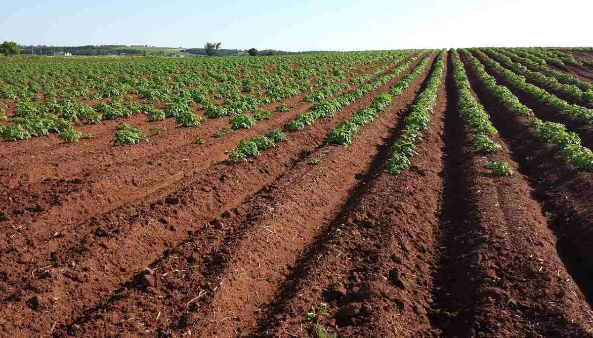

Dedicated to bringing genuine chemical-free nutrients directly from our farms to your family tables.
Passionate organic farming innovator with over 15 years of soil preservation research experience. Roy believes in restoring earth's vitality.
Supply chain expert ensuring the farm-to-table transition happens within hours, preserving enzymes and absolute freshness.
Chemist turned organic advocate. Shyam tests all incoming partner harvest products for chemical additives and purity levels.

We envision a community where healthy living and sustainable agriculture thrive together. Driven by high standards of purity, we empower farmers by giving them a fair market and give consumers pure food they can trust.
By using biological fertilizers and crop protection schemes, we safeguard the local environment and water ecosystems from heavy chemical runoff.

Our network of partner farms stretches across organic preserves. Every square foot is nurtured with organic manure, preventing degradation and encouraging micro-bacterial activity.
Regular crop rotations, combined with clean drip irrigation systems, help save up to 40% more water compared to traditional methods while keeping the soil fertile year-round.